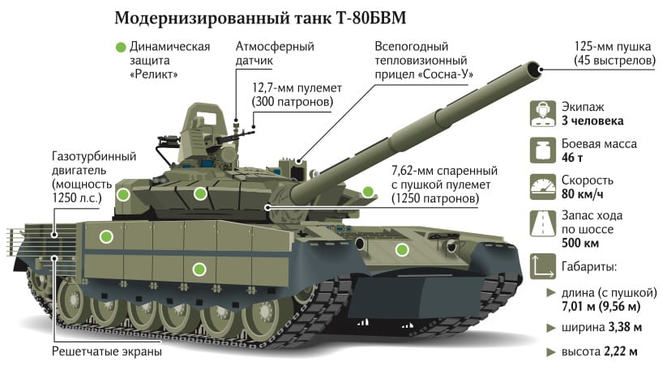

Т-80У (индекс ГАБТУ — Объект 219АС) — модифицированный основной боевой танк семейства Т-80.

Узнайте больше о характеристиках, особенностях и истории Т-80У на этом сайте.
Разработан на основе задела по опытному танку Т-80А в КБ-3 Кировского завода с установкой динамической защиты. Опытная партия в несколько десятков машин выпущена в Харькове с декабря 1983 по декабрь 1985 года с ДЗ «Контакт-1» (одна сохранилась в Кубинке). Принят на вооружение Вооружённых сил Союза ССР 27 ноября 1984.
газотурбинный двигатель ГТД-1250 мощностью 1250 л. с
бортовых экранов корпуса с интегрированными модулями динамической защиты типа «Реликт» и решётчатых экранов проекции МТО корпуса;
Т-80 активно используется в Российской и Украинской армии и является одним из основных боевых танков.
Боевое применение
Использовался 4-й гвардейской танковой дивизией (Кантемировской) во время вторжения России на территорию Украины. Дивизия действовала в Харьковской, Сумской и Черниговской областях, участвовала в боях за Тростянец, откуда её вытеснила 93-я омехбр ВСУ. В ходе боёв Кантемировская танковая дивизия понесла тяжелые потери, и в конце марта отступила с территории Сумской и Черниговской областей Украины
Используется обеими сторонами в ходе вторжение России на Украину. Военные эксперты отмечают неудачное использование Россией Т-80 в ходе вторжения[4], многие Т-80, включая танки модификации Т-80БВМ[5], были брошены, захвачены украинскими войсками[6] или уничтожены с помощью противотанковых ракетных комплексов, артиллерии, минометов и БПЛА, в том числе в результате детонации боекомплекта с отрывом башни
Также по данным проекта Oryx весной было зафиксировано уничтожение единственного экземпляра опытного российского Т-80УМ2
Т-80У 4-й гв. отбр во время занятий в ходе оперативно-специального сбора с офицерами Главного командования Сухопутных войск РФ. 2011 год.
.jpg)